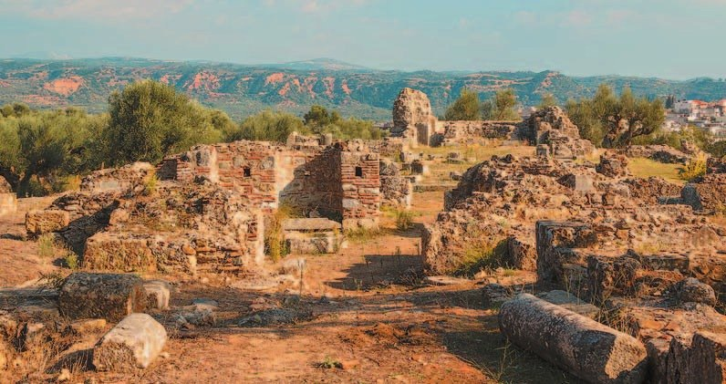
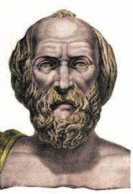
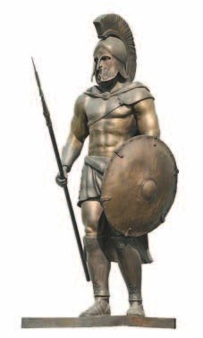
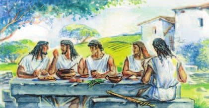

Возникновение полиса и его государственное устройство
В конце 2-го тысячелетия до н. э. на Пелопоннес пришло греческое племя (помнишь их по §20?). Они захватили область Лаконию и основали Спарту. Её часто называли Лакедемон.
Местных жителей, ахейцев, обратили в рабство — их назвали . Потом илотами сделали и жителей соседней Мессении, к западу от Лаконии. Илотов в Спарте было больше всех.
Свободными, но без полных прав были — «живущие вокруг». Это жители горных мест и те, кто сам подчинился завоевателям. У них могла быть своя земля, они занимались ремеслом и торговлей.
Гражданами считались только потомки дорийцев — спартанцы. Права гражданина спартанец получал в 30 лет.
Власть в Спарте была у царей, совета старейшин и Народного собрания. Царей было два сразу! Власть они получали по наследству, были жрецами и судьями, а на войне по очереди командовали войском.
В совет старейшин — — входили 28 старейшин старше 60 лет и оба царя. Совет принимал все важные решения. Потом их выносили на Народное собрание — и граждане криком соглашались или нет. Обсуждать было нельзя.
Ещё пять — «надзирающих» — следили, чтобы все соблюдали законы, и даже за царями.
Всё решали немногие. Такой порядок называют — «власть немногих».
В конце 2-го тысячелетия до н. э. переселившееся на Пелопоннес древнегреческое племя дорийцев захватило область Лаконию и основало Спарту (её часто называли Лакедемон). Покорённых местных жителей, ахейцев, обратили в рабство. Их стали называть илоты. Население Мессении, области, расположенной к западу от Лаконии, также превратили в илотов. Илоты составляли большинство населения Спарты.
Свободными, но неполноправными гражданами были периэки, то есть «живущие вокруг». В их число входили жители горных областей Лаконики и те, кто добровольно подчинился завоевателям. Периэки могли иметь собственный участок земли, заниматься ремёслами, торговать.
Гражданами Спарты, их называли спартанцами, считались только потомки дорийцев. В 30 лет спартанец получал политические права и мог участвовать в Народном собрании.
В Спарте власть принадлежала царям, совету старейшин и Народному собранию. В совет старейшин — герусию — входили 28 геронтов из числа людей, достигших 60 лет, и два царя. Цари получали власть по наследству и правили одновременно. Они выполняли обязанности жрецов и выступали в роли судей. В военное время цари по очереди командовали войском.
Совет старейшин принимал все важные решения. Затем их выносили на Народное собрание. Решения принимались или отвергались криками, прямое обсуждение не допускалось.
Эфоры, или надзирающие, в количестве пяти человек контролировали соблюдение законов и деятельность царей.
Порядки, установившиеся в Спарте, называют олигархией. В переводе с греческого это означает «власть немногих».
- Из каких групп состояло население Спарты?
1. Сравни Народное собрание в Спарте и в Афинах (§26).
2. Почему граждан в Спарте было меньше, чем всех остальных жителей?
Законодательство Ликурга
По преданию, законы Спарты дал в VIII веке до н. э. . Главная мысль — : чтобы никто не был богаче других.
Поэтому в Спарте запретили частную собственность, золотые и серебряные деньги и копить богатство. У каждого спартанца был участок земли, а работали на нём илоты. Продать или поделить участок было нельзя.
Уезжать из Спарты спартанцам запрещали, а всех чужеземцев выгнали.
Даже обычную жизнь расписали законы: жить в домах, срубленных топором; есть похлёбку с уксусом, овощи и рыбу; носить одинаковую одежду — без рукавов и прямоугольный плащ. Как в последний год твоего садика, где было расписано, с какой стороны подойти к столу и как задвинуть стульчик, — только на всю жизнь.
Спарта и в мире, и на войне жила как один военный лагерь. Спартанец всё время был с товарищами по отряду: с утра до вечера спорт, военные упражнения, охота. Ели вместе — каждый приносил долю продуктов со своего участка.
Спартанцы были сильными и выносливыми. Скромная суровая жизнь вместе учила их равенству и ответственности за всё государство.
В бой надевали красную одежду — на ней не видно крови. Сражались фалангой (§23). Уйти со своего места в строю считалось преступлением.
Дисциплина была железной. Однажды спартанец уже занёс меч над врагом, но услышал сигнал «отбой» — и опустил меч: «Лучше оставить в живых врага, чем ослушаться команды».
По преданию, законы, по которым жили спартанцы, установил в VIII (8) веке до н. э. Ликург. В основе этих законов лежал принцип сохранения «общины равных». На территории полиса были запрещены частная собственность, золотые и серебряные деньги, накопление богатств. Это исключало любую возможность обогащения и возникновения имущественного неравенства среди спартанцев. Каждый спартанец имел земельный участок, на котором работали илоты.
Земельные участки нельзя было ни продавать, ни дробить. Спартанцам запрещалось покидать пределы родного полиса, а все иноземцы были изгнаны из Спарты.
Спартанский полис и в мирное, и в военное время жил единым военным лагерем. Всё время спартанец проводил среди товарищей по оружию в составе военного отряда. С утра до вечера они занимались спортом, военными упражнениями, охотились. На совместные трапезы каждый приносил долю продуктов со своего участка.
Спартанцы были сильны, выносливы, стойко переносили невзгоды и опасности военных походов. Совместная скромная и суровая жизнь воспитывала в них чувство равенства, коллективной ответственности за судьбу государства.
Спартанские воины специально надевали одежду красного цвета, на которой не было видно крови. Они вступали в сражение, построившись фалангой. Покинуть место в строю считалось преступлением.
В обществе спартанцев царила жёсткая дисциплина. Однажды спартанец в бою занёс меч над врагом, но услышал отбой и отдёрнул меч: «Лучше оставить в живых врага, чем ослушаться команды».


- Как законы Ликурга изменили спартанское общество?
3. Кто на самом деле кормил спартанцев — и почему у них хватало времени только на военное дело?
4. Почему у Спарты не было крепостных стен? Вспомни §23.
5. Как одинаковая одежда и общая еда помогали «общине равных»?
Воспитание детей
Гражданином Спарты мог стать только тот, кто с самого детства прошёл особое воспитание.
Новорождённого мальчика показывали старейшинам. Здорового и крепкого разрешали растить. Слабого — нет: его приказывали бросить в пропасть. Вот насколько жестокой была Спарта.
До семи лет мальчик жил дома. Его отучали бояться темноты и одиночества и капризничать. А с семи лет его забирало государство.
Мальчиков собирали в небольшие отряды. Зимой и летом — босиком, спали на земле на связках тростника, ели мало. Их нарочно ссорили, чтобы узнать, кто храбрее. Читать и писать учили ровно настолько, чтобы прочесть приказ и написать своё имя.
Зато учили говорить коротко и точно. Отсюда выражение — от Лаконики, родины спартанцев. Ты любишь рассказывать подробно, историями. А вот твоё «пж» вместо «пожалуйста» — это почти по-спартански!
Чем старше, тем суровее. Еды нарочно давали мало — добывай сам, хоть воровством. Попался — бьют плетью как неловкого вора и оставляют голодным. Раз в год юношей секли розгами при старейшинах и родителях — терпеть надо было молча. Юноши всё время соревновались в силе и ловкости. Цель одна — вырастить воина, защитника полиса.
Было и страшное испытание — : отряды юношей ночью нападали на илотов и убивали самых молодых и сильных. Так держали илотов в страхе. Только после этого юношей считали взрослыми воинами.
Девочек растили почти так же строго: изнеженность считалась пороком. Девушки соревновались в гимнастике и беге — греки думали, что у сильных родителей будут сильные дети.
Ели спартанцы вместе — это называлось , «совместное питание». Как у вас в «Концепте», где весь класс обедает в столовой одновременно.
По законам Ликурга, спартанским гражданином мог быть только тот человек, который с раннего детства получил особое воспитание. После рождения в семье мальчика его приносили старейшинам. Они осматривали младенца и, если находили его здоровым и крепким, разрешали отцу растить сына. Слабого ребёнка приказывали бросить в пропасть.
До семи лет мальчики росли в семье, их отучали от страха перед темнотой и одиночеством, от капризов. Затем их воспитанием занималось государство.
Мальчиков объединяли в небольшие группы и приучали к суровой дисциплине: зимой и летом ходить без обуви, играть без одежды, спать на земле на связках тростника, есть скудную пищу. Их специально ссорили и провоцировали драки с целью выяснить, кто храбрее. Мальчиков учили грамоте в пределах, которые были необходимы, чтобы прочитать приказ или написать своё имя. Их учили коротко и точно выражать свои мысли. Выражение «лаконичная речь», то есть способность говорить кратко и чётко, как раз и пришло из области Лаконика, с родины спартанцев.
Любопытные детали. Самым знаменитым было изречение спартанки, провожавшей сына на войну. Она подала ему щит и сказала: «С ним или на нём!» Со щитом возвращались победители, на щите приносили павших.
Спартанец пришёл послом к македонскому царю. «Ты один?» — удивился царь, привыкший к пышным и многолюдным посольствам. «К одному», — ответил спартанец.
Македонский царь отправил послание спартанцам: «Если я вступлю в Пелопоннес, Спарта будет уничтожена». Спартанцы ответили всего одним словом: «Если!»
Условия воспитания ужесточались по мере взросления мальчиков. Умышленно выдавая скудное питание, их приучали самостоятельно добывать продукты путём воровства. Тех, кто попадался, нещадно били плетью, как неловкого вора, и заставляли голодать.
Ежегодно юношей секли розгами в присутствии старейшин и родителей. Молодые спартанцы молча переносили такое испытание. Юноши постоянно состязались в силе, ловкости и сноровке. Главной целью воспитания была подготовка к будущей суровой жизни воина — защитника своего полиса.
Юноши проходили и такое испытание, как криптии. Молодые спартанцы собирались в отряды и под покровом ночи нападали на илотов, стараясь уничтожить самых молодых и сильных. Эти убийства должны были держать в страхе порабощённое население. Только после таких набегов на илотов юноши считались достойными стать взрослыми воинами.
Воспитание девушек мало чем отличалось от воспитания мальчиков. Их также держали в строгости. Изнеженность считалась пороком. Девушки состязались между собой в гимнастических упражнениях и беге. Древние греки считали, что только у сильных и крепких супругов появятся сильные и здоровые дети.

- Какие качества воспитывали в юных спартанцах?
6. Зачем спартанцев так мало учили грамоте, но так много — говорить коротко? Свяжи с их жизнью.
7. Как связаны криптии и то, что илотов в Спарте было больше всех?
8. Что значат слова «С ним или на нём!»? Как они связаны со строем фаланги?
Подведём итоги
- Чем различалась структура населения Афин и Спарты?
- Кого считали гражданином в Спарте?
- Что означал принцип «община равных» в законах Ликурга?
- Как ты думаешь, почему Спарта считалась самым воинственным полисом Греции?
Философ и писатель Плутарх писал о Спарте.
«…Спартанцы считали себя принадлежащими не лично себе, но отечеству».
Сформулируй ответ на главный вопрос параграфа — какие цели преследовали законы Ликурга? Приведи два-три довода.
Проверь себя
Нажимай по очереди — от самого древнего к самому близкому к нам. Здесь есть и Афины из §26.
1. Кто составлял большинство населения Спарты?
2. Сколько царей правило в Спарте одновременно?
3. Как Народное собрание Спарты принимало решения?
4. Что запрещали законы Ликурга?
5. Почему спартанцы шли в бой в красной одежде?
6. Откуда выражение «лаконичная речь»?
Расскажи вслух
Кто жил в Спарте
- Дорийцы захватили Лаконию и основали Спарту; спартанцы — граждане с 30 лет.
- Илоты — покорённые ахейцы и мессенцы, большинство, работают на земле спартанцев.
- Периэки — «живущие вокруг»: свободные, земля, ремёсла, торговля, но без прав граждан.
Как управлялась Спарта
- Два царя сразу: по наследству, жрецы и судьи, по очереди ведут войско.
- Герусия — 28 старейшин старше 60 лет и цари — принимает все решения; собрание кричит «да» или «нет».
- Пять эфоров следят за законами и царями; это олигархия — «власть немногих».
«Община равных» Ликурга
- Нет частной собственности, золотых и серебряных денег; участки нельзя продать.
- Одинаковые дома, еда и одежда; общие обеды-сисситии; уезжать нельзя.
- Жизнь — военный лагерь: упражнения, охота, красная одежда, фаланга, железная дисциплина.
Воспитание спартанцев
- Осмотр младенца; до 7 лет дома; с 7 лет — государство: отряды, босиком, мало еды.
- Грамота — только самое нужное; говорить коротко — «лаконично».
- Юноши: добывать еду, терпеть розги, состязания, криптии; девочек тоже растили строго.
Главный вопрос: цели законов Ликурга
- Сохранить «общину равных», чтобы никто не стал богаче других.
- Сделать каждого гражданина воином, а Спарту — сильнейшей армией Греции.
- Держать в подчинении илотов, которых было больше, чем спартанцев.